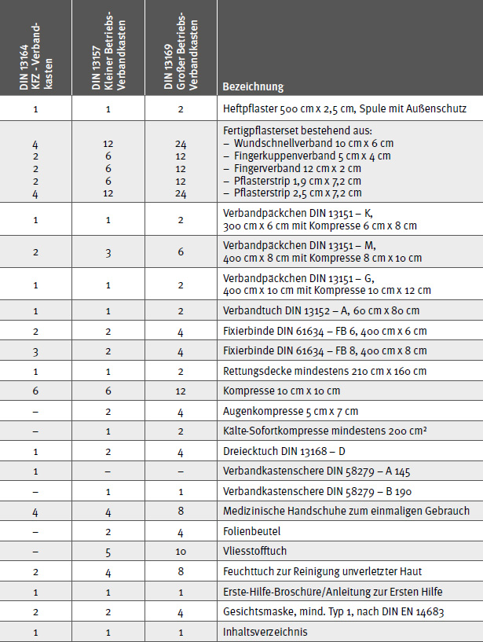

Über jede Erste-Hilfe-Leistung müssen nach § 24 Abs. 6 der DGUV Vorschrift 1 "Grundsätze der Prävention" Aufzeichnungen geführt und fünf Jahre lang aufbewahrt werden. Die Aufzeichnungen sind vertraulich zu behandeln.
Die Angaben dienen als Nachweis, dass die Verletzung/Erkrankung bei einer versicherten Tätigkeit ein- bzw. aufgetreten ist. Diese Aufzeichnungen können sehr wichtig sein, wenn z. B. Spätfolgen eintreten sollten.
Diese Aufzeichnungen der im Betrieb erfolgten Erste-Hilfe-Leistungen sind nicht zuletzt auch Informationsquelle für die Erfassung, Untersuchung und Auswertung von nicht meldepflichtigen Arbeitsunfällen, die vom Betriebsarzt oder der Betriebsärztin und von der Fachkraft für Arbeitssicherheit durchzuführen sind.
Diese Formulare sollten idealerweise gemeinsam mit dem Erste-Hilfe-Material aufbewahrt werden.
Die ausgefüllten Formulare sollten an einem Ort gesammelt werden, an dem der Zugriff Unbefugter vermieden werden kann.

| KFZ-Verbandkasten | – DIN 13164 "Erste-Hilfe-Material – Verbandkasten B" |
| Kleiner Verbandkasten für Betriebe | – DIN 13157 "Erste-Hilfe-Material – Verbandkasten C" |
| Großer Verbandkasten für Betriebe | – DIN 13169 "Erste-Hilfe-Material – Verbandkasten E" |